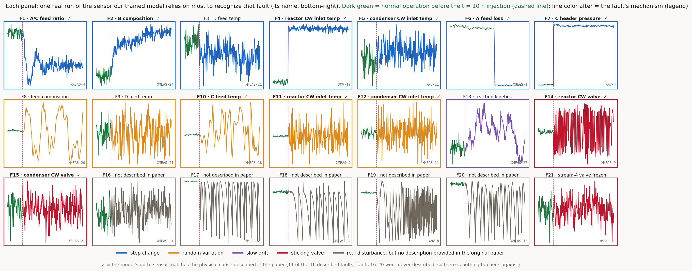
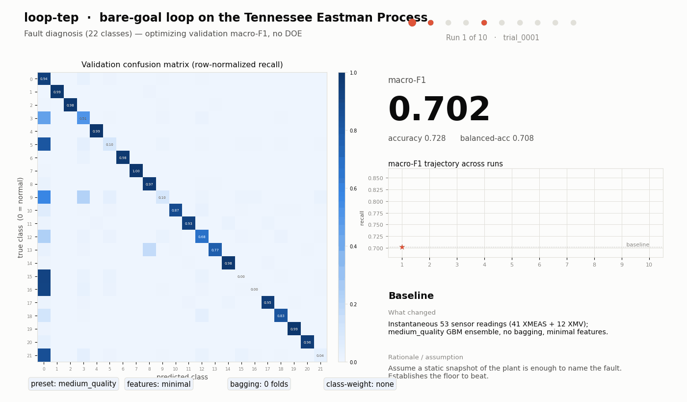
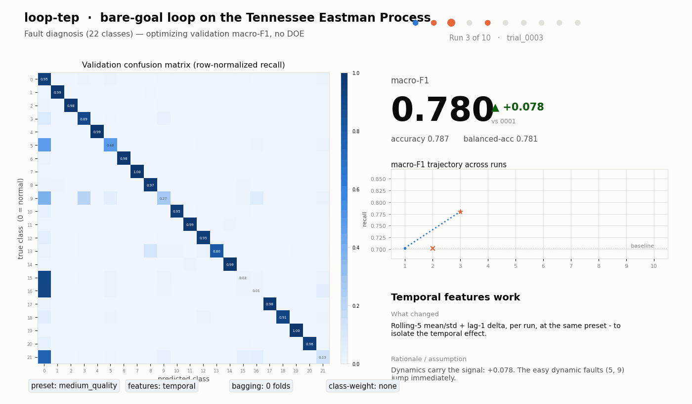
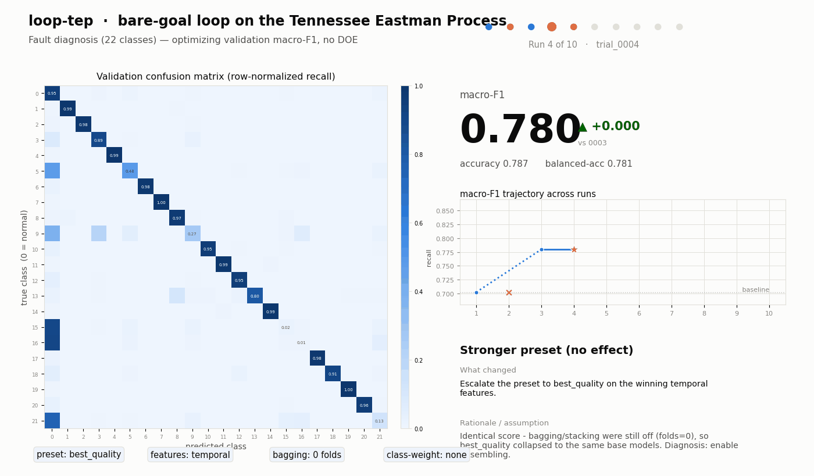
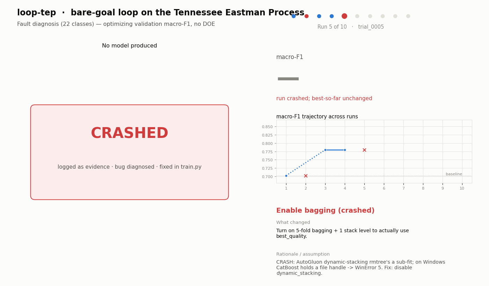
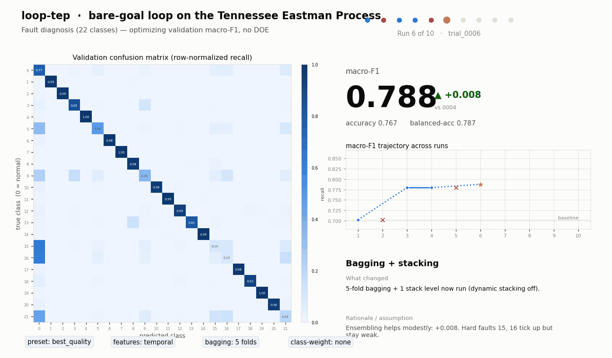
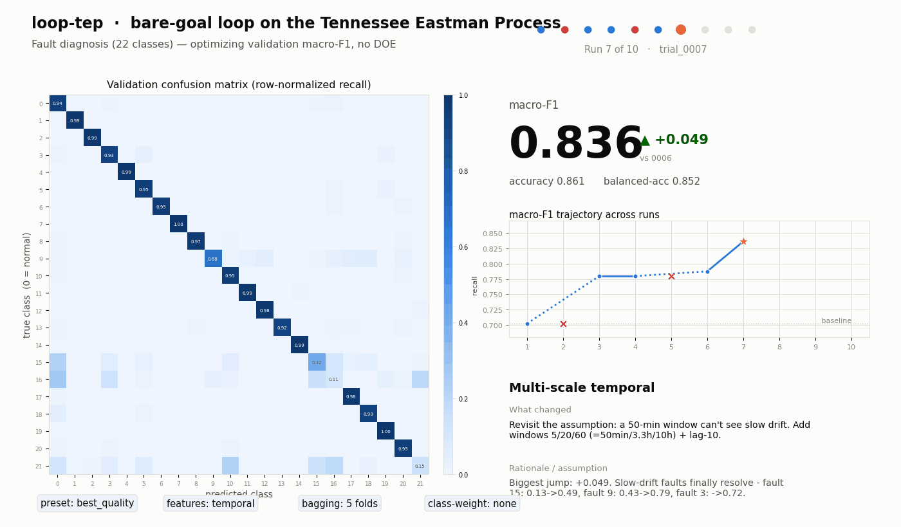
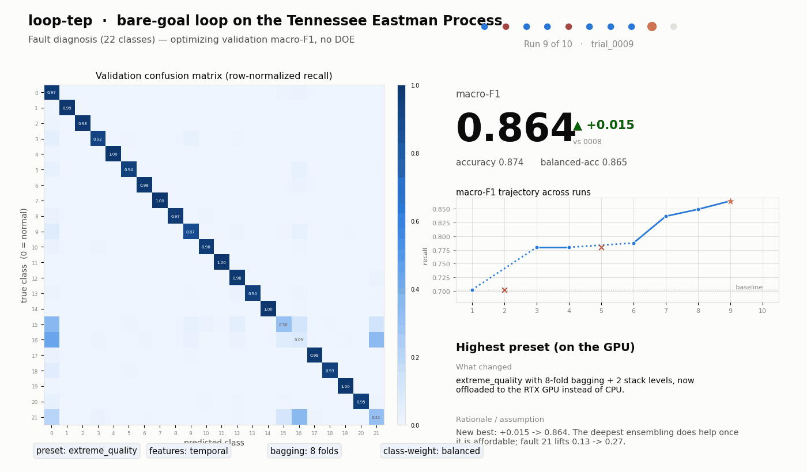
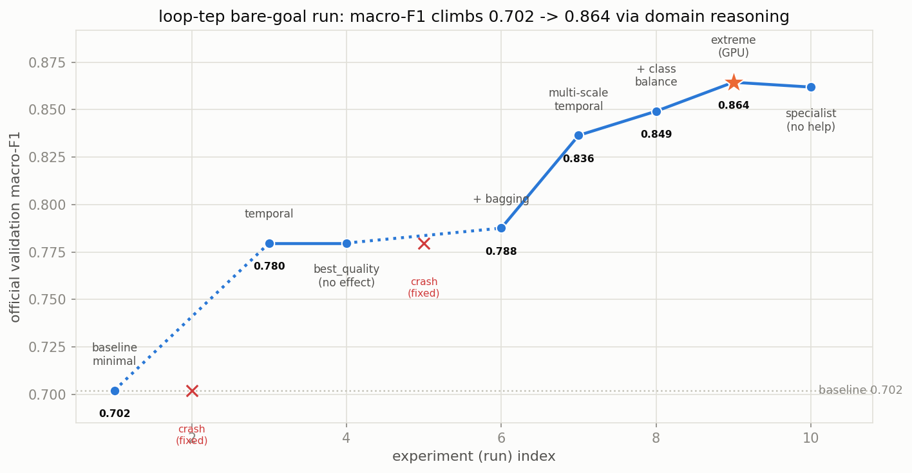
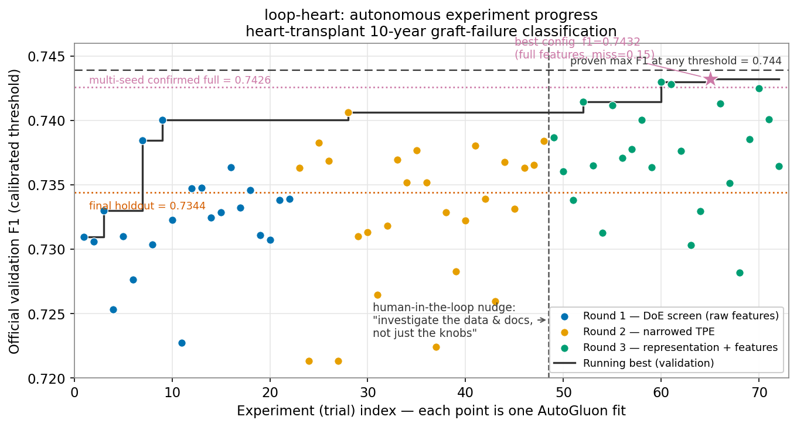

TRIAGE
Trustworthy Run-efficient Investigation of Agentic Guided Experiments
A briefing for the NSF Manufacturing Systems Integration (MSI) Program • Presented by the TRIAGE Team
Farmer School of Business, Miami University
Farmer School of Business, Miami University
Farmer School of Business, Miami University
Dept. of Engineering Technology, Miami University
Farmer School of Business, Miami University
College of Engineering, University of Georgia
August 12, 2026
An Opinionated Timeline of GenAI
program.mdmodify → experiment → measure → keep/discard ↻
August 5, 2026: The Loop Becomes a Company
June–July 2026 · “loop engineering” enters the conversation
Forbes: “Loop Engineering Is Fully Making The Rounds…” · Business Insider: “Forget prompt engineering: ‘Loop engineering’ is all the rage now” · Fast Company: “Why AI learning loops are a governance issue”
DISCOVERY LOOP
Jeff Dean · Sanjay Ghemawat · Quoc Le · Oriol Vinyals leave Google to automate the research loop


Slides from the founders’ own pitch deck, shared publicly by Jeff Dean (names above link to their Google Scholar profiles)
Explicit aim: accelerate science and engineering, toward the 14 NAE Grand Challenges, a list NSF itself commissioned.
amid the departures
with Alphabet · Lightspeed · Kleiner Perkins · Doerr Capital
Loop Engineering Applied to Manufacturing Systems
Tennessee Eastman Process (TEP): the canonical simulated chemical-plant benchmark (Downs & Vogel, 1993). 22 fault classes, 53 process variables, evaluation on unseen simulation runs. Our harness; the agent drives.
loop-tep/
├── program.md ← the loop contract
├── config.json · frozen
├── prepare.py · frozen
├── train.py · mutable: the agent edits this
├── run_baseline.py · trial → log + git commit
├── results.tsv · append-only log
├── reasoning_log.tsv · observation → hypothesis
└── runs/ · 874 artifacts
program.md contract:
- Objective: maximize validation macro-F1
-
Frozen evaluation:
config.json·prepare.py -
Mutable surface:
train.pyonly - Stopping, informal: “stop when improvements dry up” (exactly the kind of rule DOE makes principled)
> python run_baseline.py –observation “…” –hypothesis “…”
⏺ trial_0001 minimal · medium macro-F1 0.702 [baseline · committed]
✗ trial_0002 temporal CRASH (stale cache; agent fixes train.py)
⏺ trial_0003 temporal (roll5+lag1) 0.780 (+0.078)
⏺ trial_0004 best_quality 0.780 (no change: bagging was off)
✗ trial_0005 + bag5/stack1 CRASH (Windows stacking bug; agent fixes)
⏺ trial_0006 + bag5/stack1 0.788
⏺ trial_0007 multi-scale (5/20/60) 0.836 (+0.049)
⏺ trial_0008 + class-balanced 0.849
⏺ trial_0009 extreme · bag8 · GPU 0.864 ★ champion
⏺ trial_0010 + specialist(16,21) 0.862 (no help → STOP)
★ holdout (gated, touched once) 0.885
The Tennessee Eastman Experiment
An autonomous bare-goal loop on a simulated chemical plant
Why Tennessee Eastman?
An integrated production system in miniature: a realistic plant-wide control problem from a real Eastman Chemical process (Downs & Vogel, 1993) that converts gaseous feeds A, C, D, E into liquid products G and H. The dominant fault-diagnosis testbed since.
A fault anywhere becomes a signature everywhere: diagnosis is a systems-integration problem.
The Experimental Contract
The agent’s task, stated as the optimization problem it is:
config.json, prepare.py). No leakage: features must live within a run.
train.py: feature representation (instantaneous vs. temporal vs. multi-scale) · model families · presets · bagging and stacking depth · class weights.
results.tsv → keep only if validation improves. Reasoning logged every run (--observation, --hypothesis).
The Data: 21 Faults, 210 Runs
closed-loop plant
one disturbance flag, at t = 10 h
= 210 runs · 50 h each
normal + 21 faults · unseen runs only

The Loop’s Trajectory







What the Agent Actually Learned
> python run_baseline.py --observation “…” --hypothesis “…” → reasoning_log.tsv · one row per trial · git-committed
“In a closed loop, a fault is a trajectory, not a snapshot.” the agent’s own logged hypothesis, before run 2
Run Budgets Across Two Autonomous Experiments
The same harness pattern with two different program.md contracts, on two very different problems. Shown here for the run-budget contrast:


One pattern, wildly different run budgets and gain profiles: run-efficiency is the scarce resource.
The Fundamental Hypothesis
If science is becoming an automated propose → run → evaluate loop (Discovery Loop’s own words, and the first slide of their pitch deck, right), then the statistical question is:
To Be Continued
TRIAGE aims · the heart-transplant arm · MSI fit · the ask

TRIAGE · Miami University & University of Georgia · Briefing for NSF MSI